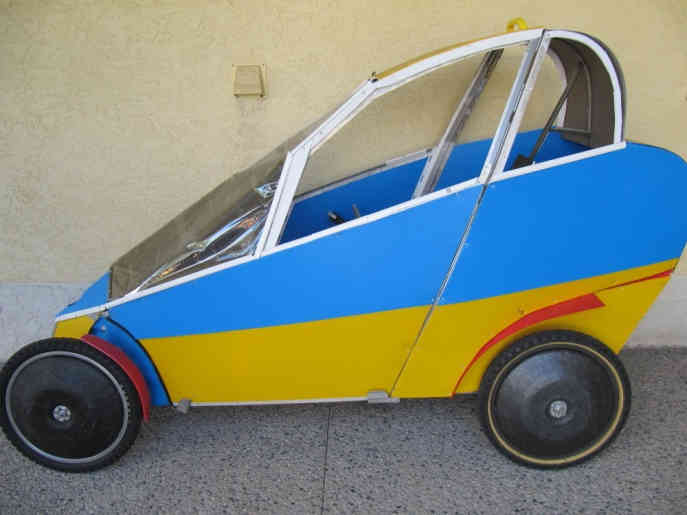
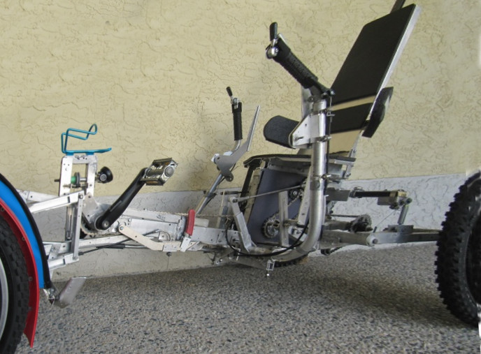
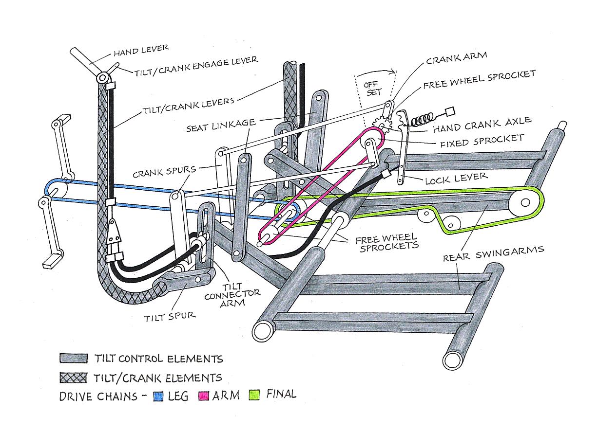

Contents | About | Contact
article 28, issue 12
Adding Arm Power to a Tilting VelomobileWally Swarchuk
December 21, 2020Editor's Note
This article is about a unique vehicle featuring several modes of powering, tilting and steering. It probably has to be ridden rather than read about in order to completely understand its operation! Wally Swarchuk's perseverence and workmanship with this complex project is amazing. The editor (TS) built a similar but simpler vehicle in 1986, a tricycle with two rear trailing arms, and gave up on the tilting mechanism after achieving no stable rides, unable to sufficiently reduce friction in the mechanism. Having failed and using his trike in "locked mode" ever since without capsizing, he is now biased in regarding tilting as a solution without a problem, but would love to try out this vehicle!
In the following, please read Wally Swarchuk's Abstract or go straight to his full article as PDF (1 MB).
Abstract
This article presents the design of an arm and leg propelled, four-wheeled vehicle comprised of front and rear swingarms and incorporating mechanisms for controlling vehicle inclination, as well as manual and free-to-caster steering devices for controlling vehicle direction. By controlling the up and down movement of the rear swingarms, the operator controls the parallel inclination of the mainframe and wheels eliminating the need to put a foot down to maintain balance at stops and allowing the vehicle to be enclosed as an all-weather commuter. Arm-cranking is performed with reciprocating hand-levers linked to a drivetrain, while tilt-control is actuated by the rider's hip shifting on a pivoting seat bottom and the reciprocating hand-levers when not arm-cranking. Both tilting devices are pivotally linked to the rear swingarms. Manual steering is actuated by thumb-control levers, while free-to-caster steering is indirectly controlled by vehicle speed and inclination. The complementary benefits of tilt-control, manual steering and free-to-caster steering allows the operator to engage in the arm-cranking when desired. The vehicle is propelled by legs only, arms only or equal cadence out-of-phase arms and legs.
Here are editted versions of the first three figures:

Figure 1 -- Coupe style body with roll-down side windows
Figure 2 -- Vehicle frame with recumbent seat and arm cranking levers (editted)
Figure 3 -- Schematic of dual drive system and tilt control elements
Download the complete article PDF (1 MB)